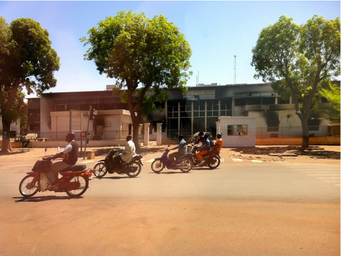

Burkina Faso's data revolution: government transition to open data
The Avenue de l’Indépendance in Ouagadougou is home to the neat 2- and 3-storey buildings that house most of Burkina Faso’s government ministries. Halfway down the street this order gives way to the charred remains of what was, until 30 October of last year, the House of Parliament.

The building is one of the few reminders of the 36 hour revolution that swept the president from office and led to the establishment of a one-year interim government made up of opposition, civil society and the military.
While the cabinet of ministers was removed along with the president, the administration was left in place – both the buildings, left untouched by the 800,000 strong crowd of protestors, and the employees.
The streets were cleaned and government employees returned to work on Monday morning, but the parliament building has been left as it was. "A reminder" I was told last week “to the next person taking the presidency that the people don’t want them to stay forever”.
One unexpected outcome of this important moment in Burkina Faso’s – and, some have argued, Africa’s – history has been a strengthening of the open data initiative.
The interim administration, reflecting on some of the root causes of the revolution, is looking to transparency, as well as youth employment in ICT, as a stabilising force. You can find the minutes of their last cabinet meeting online here.
The summer before the revolution a small team in a government agency had built an alpha open data portal and pilot app together with volunteers from civil society and some support from the ODI and World Bank. It was presented at the 2014 ODI Summit by the Director General Alfred Sawadogo.
Alfred N. Sawadogo - Burkina Faso: setting the bar high for e-government from Open Data Institute on Vimeo.
ANPTIC, the agency in charge of promoting of ICT, is located across the street from the old parliament building. It has grown in head count by 60 since last October, funded through the core government budget. This has enabled the open data team to expand to 6, with support from a wider team that now includes, for example, a director with responsibilities for applications. New apps for searching government contracts and suggesting open data projects have been developed.
The team last week brought together directors with responsibility for statistics from each of the 27 ministries for two days of training on open data. The World Bank had just signed off on a $300,000 grant to expand the project to include a focus on drought risk in this largely agrarian country prone to extremes of weather. The team are also exploring an open elections project – examining how their skills can contribute to a successful transition. One idea is to build an open API and platform so election results can be known more speedily – watch this space!
Huge challenges remain of course, not least the maintenance of the stability which has characterised the four months since the revolution. Recent history is full of warnings of revolutions ended in turmoil.
And yet Burkina Faso can be seen as, perhaps, an extreme example of an open data initiative dealing with a transition of government, but this is a challenge that many governments face. And there are potential lessons we might take from their experience to date.
We often think that it is the economic arguments that will make open data sustainable and give programmes longevity. However, it might just be that transparency at a time of transition brings buy-in in two ways. The first is that transparency is usually a good strategy for signifying a change to business as usual, especially in contexts where trust is low.
The second is that a transition is a good time to push for transparency, as at least in the immediate term, the actions and decisions being exposed are those of someone else.
But then again, a lesson might be that tapping into the current political trend or catching the zeitgeist is a good way to stay relevant, and for open data initiatives to thrive in the context of political transition.